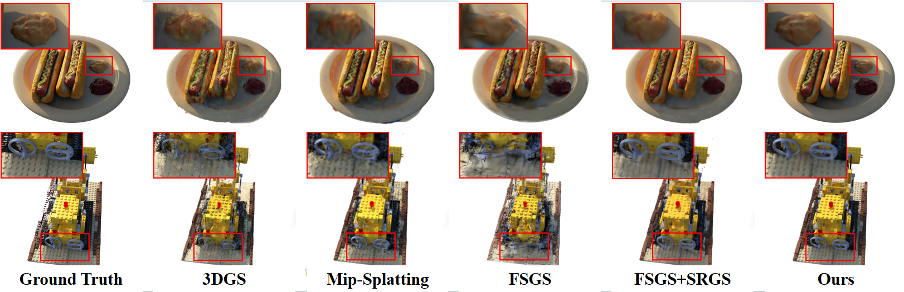

Main Results
Visual Results

Visual Results
Visual Results

In this paper, we aim ambitiously for a realistic yet challenging problem, namely, how to reconstruct high-quality 3D scenes from sparse low-resolution views that simultaneously suffer from deficient perspectives and clarity. Whereas existing methods only deal with either sparse views or low-resolution observations, they fail to handle such hybrid and complicated scenarios. To this end, we propose a novel Sparse-view Super-resolution 3D Gaussian Splatting framework, dubbed S2Gaussian, that can reconstruct structure-accurate and detail-faithful 3D scenes with only sparse and low-resolution views. The S2Gaussian operates in a two-stage fashion. In the first stage, we initially optimize a low-resolution Gaussian representation with depth regularization and densify it to initialize the high-resolution Gaussians through a tailored Gaussian Shuffle Split operation. In the second stage, we refine the high-resolution Gaussians with the super-resolved images generated from both original sparse views and pseudo-views rendered by the low-resolution Gaussians. In which a customized blur-free inconsistency modeling scheme and a 3D robust optimization strategy are elaborately designed to mitigate multi-view inconsistency and eliminate erroneous updates caused by imperfect supervision. Extensive experiments demonstrate superior results and in particular establishing new state-of-the-art performances with more consistent geometry and finer details.
The S2Gaussian initially optimizes an LR GS and densifies it to initialize the HR GS through a tailored Gaussian Shuffle Split operation. Then, the original sparse views along with the pseudo views rendered by the LR GS are super-resolved together to refine the high-resolution texture with 3D robust optimization. In which an inconsistency modeling module (IM) and a blur proposal module are incorporated to mitigate inconsistency and blurriness, aiming to create 3D scenes with high-fidelity texture details.
@article{wan2025s2gaussian,
author = {Yecong Wan and Yuanshuo Cheng and Mingwen Shao and Wangmeng Zuo},
title = {S2Gaussian: Sparse-View Super-Resolution 3D Gaussian Splatting},
journal = {CVPR},
year = {2025},
}